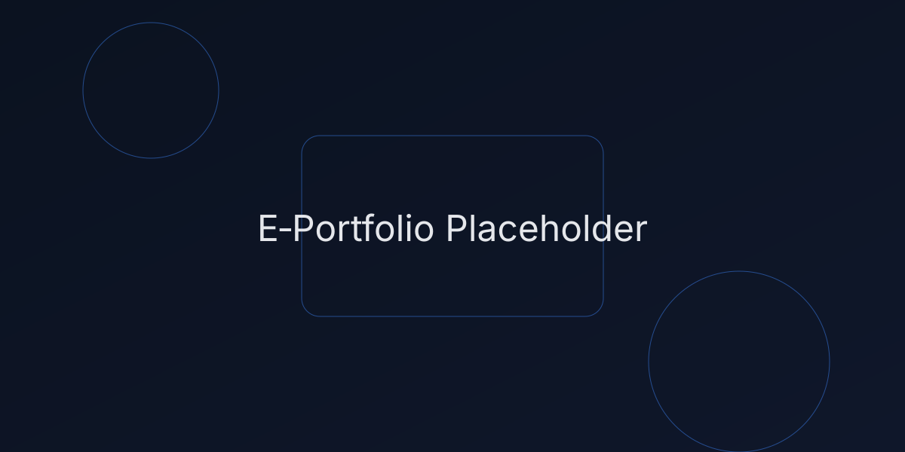

Task 1
IEEE referencing & written summary on essential academic and employment skills, plus reflection.
Open Task 1Hello, I’m [Your Name]. This Level 4 e‑portfolio is for Learning in the Digital Era (ACCA4025) and showcases four assessed tasks with proper IEEE citations and references.
It includes: (1) a written summary on essential academic and employment skills, (2) a teamwork mind‑map and an A3 academic poster, (3) an automatically referenced summary of a Unit 3 topic with RefWorks evidence, and (4) an e‑portfolio creation review with screenshots.
Use the navigation to visit each task page. Screenshots for submission to Turnitin can be captured from each page after deployment.
Start with Task 1
IEEE referencing & written summary on essential academic and employment skills, plus reflection.
Open Task 1Team mind‑map artefact and an A3 academic poster on “Life is a Team Sport”.
Open Task 2Unit 3 “Virtual Collaboration” topic summary with automatic citations and RefWorks evidence.
Open Task 3E‑portfolio creation details, tool choice, and screenshots for submission.
Open Task 4